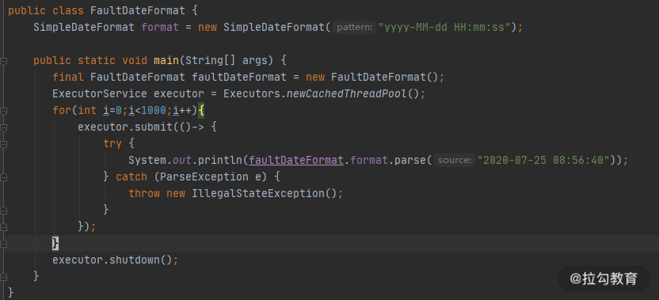
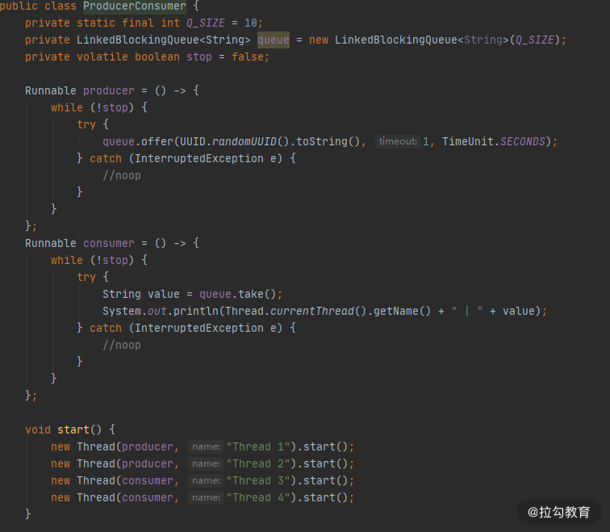
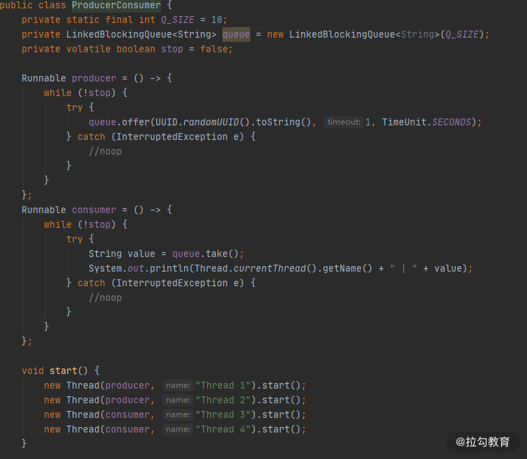

12 案例分析：并行计算让代码“飞”起来¶
现在的电脑，往往都有多颗核，即使是一部手机，也往往配备了并行处理器，通过多进程和多线程的手段，就可以让多个 CPU 核同时工作，加快任务的执行。
Java 提供了非常丰富的 API，来支持多线程开发。对我们 Java 程序员来说，多线程是面试和工作中必备的技能。但它如何应用到业务场景中？又有哪些注意事项？本课时将从一个并行获取数据的例子开始，逐步讲解这个面试中最频繁的知识点。
并行获取数据¶
考虑到下面一种场景。有一个用户数据接口，要求在 50ms 内返回数据。它的调用逻辑非常复杂，打交道的接口也非常多，需要从 20 多个接口汇总数据。这些接口，最小的耗时也要 20ms，哪怕全部都是最优状态，算下来也需要 20*20 = 400ms。
如下图，解决的方式只有并行，通过多线程同时去获取计算结果，最后进行结果拼接。

但这种编程模型太复杂了，如果使用原始的线程 API，或者使用 wait、notify 等函数，代码的复杂度可以想象有多大。但幸运的是，现在 Java 中的大多数并发编程场景，都可以使用 concurrent 包的一些工具类来实现。
在这种场景中，我们就可以使用 CountDownLatch 完成操作。CountDownLatch 本质上是一个计数器，我们把它初始化为与执行任务相同的数量。当一个任务执行完时，就将计数器的值减 1，直到计数器值达到 0 时，表示完成了所有的任务，在 await 上等待的线程就可以继续执行下去。
下面这段代码，是我专门为这个场景封装的一个工具类。它传入了两个参数：一个是要计算的 job 数量，另外一个是整个大任务超时的毫秒数。
public class ParallelFetcher {
final long timeout;
final CountDownLatch latch;
final ThreadPoolExecutor executor = new ThreadPoolExecutor(100, 200, 1,
TimeUnit.HOURS, new ArrayBlockingQueue<>(100));
public ParallelFetcher(int jobSize, long timeoutMill) {
latch = new CountDownLatch(jobSize);
timeout = timeoutMill;
}
public void submitJob(Runnable runnable) {
executor.execute(() -> {
runnable.run();
latch.countDown();
});
}
public void await() {
try {
this.latch.await(timeout, TimeUnit.MILLISECONDS);
} catch (InterruptedException e) {
throw new IllegalStateException();
}
}
public void dispose() {
this.executor.shutdown();
}
}
当我们的 job 运行时间，超过了任务的时间上限，就会被直接终止，这就是 await 函数的功能。
下面是使用这段代码的一个示例。SlowInterfaceMock 是一个测试类，用来模拟远程服务的超时动作，会等待 0~60 毫秒，程序运行后，会输出执行结果到 map 集合中。
public static void main(String[] args) {
final String userid = "123";
final SlowInterfaceMock mock = new SlowInterfaceMock();
ParallelFetcher fetcher = new ParallelFetcher(20, 50);
final Map<String, String> result = new HashMap<>();
fetcher.submitJob(() -> result.put("method0", mock.method0(userid)));
fetcher.submitJob(() -> result.put("method1", mock.method1(userid)));
fetcher.submitJob(() -> result.put("method2", mock.method2(userid)));
fetcher.submitJob(() -> result.put("method3", mock.method3(userid)));
fetcher.submitJob(() -> result.put("method4", mock.method4(userid)));
fetcher.submitJob(() -> result.put("method5", mock.method5(userid)));
fetcher.submitJob(() -> result.put("method6", mock.method6(userid)));
fetcher.submitJob(() -> result.put("method7", mock.method7(userid)));
fetcher.submitJob(() -> result.put("method8", mock.method8(userid)));
fetcher.submitJob(() -> result.put("method9", mock.method9(userid)));
fetcher.submitJob(() -> result.put("method10", mock.method10(userid)));
fetcher.submitJob(() -> result.put("method11", mock.method11(userid)));
fetcher.submitJob(() -> result.put("method12", mock.method12(userid)));
fetcher.submitJob(() -> result.put("method13", mock.method13(userid)));
fetcher.submitJob(() -> result.put("method14", mock.method14(userid)));
fetcher.submitJob(() -> result.put("method15", mock.method15(userid)));
fetcher.submitJob(() -> result.put("method16", mock.method16(userid)));
fetcher.submitJob(() -> result.put("method17", mock.method17(userid)));
fetcher.submitJob(() -> result.put("method18", mock.method18(userid)));
fetcher.submitJob(() -> result.put("method19", mock.method19(userid)));
fetcher.await();
System.out.println(fetcher.latch);
System.out.println(result.size());
System.out.println(result);
fetcher.dispose();
}
使用这种方式，我们的接口就可以在 固定的时间内 返回了。concurrent 包里面提供了非常多的类似 CountDownLatch 的工具，在享受便捷性的同时，我们来看一下这段代码需要注意的事情。
首先，latch 的数量加上 map 的 size，总数应该是 20，但运行之后，大概率不是，我们丢失了部分数据。原因就是，main 方法里使用了 HashMap 类，它并不是线程安全的，在并发执行时发生了错乱，造成了错误的结果，将 HashMap 换成 ConcurrentHashMap 即可解决问题。
从这个小问题我们就可以看出：并发编程并不是那么友好，一不小心就会踏进陷阱。如果你对集合的使用场景并不是特别在行，直接使用线程安全的类，出错的概率会更少一点。
我们再来看一下线程池的设置，里面有非常多的参数，最大池数量达到了 200 个。那线程数到底设置多少合适呢？按照我们的需求，每次请求需要执行 20 个线程，200 个线程就可以支持 10 个并发量，按照最悲观的 50ms 来算的话，这个接口支持的最小 QPS 就是：1000/50*10=200。这就是说，如果访问量增加，这个线程数还可以调大。
在我们的平常的业务中，有计算密集型任务和 I/O 密集型任务之分。
- I/O 密集型任务 对于我们常见的互联网服务来说，大多数是属于 I/O 密集型 的，比如等待数据库的 I/O，等待网络 I/O 等。在这种情况下，当线程数量等于 I/O 任务的数量时，效果是最好的。虽然线程上下文切换会有一定的性能损耗，但相对于缓慢的 I/O 来说，这点损失是可以接受的。
我们上面说的这种情况，是针对同步 I/O 来说的，基本上是一个任务对应一个线程。异步 NIO 会加速这个过程，《15 | 案例分析：从 BIO 到 NIO，再到 AIO》将对其进行详细讲解。
- 计算密集型任务 计算密集型的任务却正好相反，比如一些耗时的算法逻辑。CPU 要想达到最高的利用率，提高吞吐量，最好的方式就是：让它尽量少地在任务之间切换，此时，线程数等于 CPU 数量，是效率最高的。
了解了任务的这些特点，就可以通过调整线程数量增加服务性能。比如，高性能的网络工具包 Netty，EventLoop 默认的线程数量，就是处理器的 2 倍。如果我们的业务 I/O 比较耗时，此时就容易造成任务的阻塞，解决方式有两种：一是提高 worker 线程池的大小，另外一种方式是让耗时的操作在另外的线程池里运行。
从池化对象原理看线程池¶
线程的资源也是比较昂贵的，频繁地创建和销毁同样会影响系统性能。结合《09 | 案例分析：池化对象的应用场景》中对池化对象的描述，线程资源是非常适合进行池化的。
线程池与其他对象池的设计思路差不多，但它有一些细微的差别，下面我们来看一下线程池参数最全的构造方法：
public ThreadPoolExecutor(int corePoolSize,
int maximumPoolSize,
long keepAliveTime,
TimeUnit unit,
BlockingQueue<Runnable> workQueue,
ThreadFactory threadFactory,
RejectedExecutionHandler handler)
前几个参数没有什么好说的，相对于普通对象池而言，由于线程资源总是有效，它甚至少了非常多的 Idle 配置参数（与对象池比较），我们主要来看一下 workQueue 和 handler。
关于任务的创建过程，可以说是多线程每次必问的问题了。如下图所示，任务被提交后，首先判断它是否达到了最小线程数（coreSize），如果达到了，就将任务缓存在任务队列里。如果队列也满了，会判断线程数量是否达到了最大线程数（maximumPoolSize），如果也达到了，就会进入任务的拒绝策略（handler）。
{kind=link}
我们来看一下 Executors 工厂类中默认的几个快捷线程池代码。1.固定大小线程池
return new ThreadPoolExecutor(nThreads, nThreads,
0L, TimeUnit.MILLISECONDS,
new LinkedBlockingQueue
FixedThreadPool 的最大最小线程数是相等的，其实设置成不等的也不会起什么作用。主要原因就是它所采用的任务队列 LinkedBlockingQueue 是无界的，代码走不到判断最大线程池的逻辑。keepAliveTime 参数的设置，也没有意义，因为线程池回收的是 corePoolSize 和 maximumPoolSize 之间的线程。 这个线程池的问题是，由于队列是无界的，在任务较多的情况下，会造成内存使用不可控，同时任务也会在队列里长时间等待。2.无限大小线程池
return new ThreadPoolExecutor(0, Integer.MAX_VALUE,
60L, TimeUnit.SECONDS,
new SynchronousQueue
CachedThreadPool 是另外一个极端，它的最小线程数是 0，线程空闲 1 分钟的都会被回收。在提交任务时，使用了 SynchronousQueue，不缓存任何任务，直接创建新的线程。这种方式同样会有问题，因为它同样无法控制资源的使用，很容易造成内存溢出和过量的线程创建。 一般在线上，这两种方式都不推荐，我们需要根据具体的需求，使用 ThreadPoolExecutor 自行构建线程池，这也是阿里开发规范中推荐的方式。 - 如果任务可以接受一定时间的延迟，那么使用 LinkedBlockingQueue 指定一个队列的上限，缓存一部分任务是合理的； - 如果任务对实时性要求很高，比如 RPC 服务，就可以使用 SynchronousQueue 队列对任务进行传递，而不是缓存它们。3.拒绝策略 默认的拒绝策略，就是抛出异常的 AbortPolicy，与之类似的是 DiscardPolicy，它什么都不做，连异常都不抛出，这个非常不推荐。 还有一个叫作 CallerRunsPolicy，当线程池饱和时，它会使用用户的线程执行任务。比如，在 Controller 里的线程池满了，会阻塞在 Tomcat 的线程池里对任务进行执行，这很容易会将用户线程占满，造成用户业务长时间等待。具体用不用这种策略，还是要看客户对等待时间的忍受程度。 最后一个策略叫作 DiscardOldestPolicy，它在遇到线程饱和时，会先弹出队列里最旧的任务，然后把当前的任务添加到队列中。
在 SpringBoot 中如何使用异步？¶
SpringBoot 中可以非常容易地实现异步任务。 首先，我们需要在启动类上加上 @EnableAsync 注解，然后在需要异步执行的方法上加上 @Async 注解。一般情况下，我们的任务直接在后台运行就可以，但有些任务需要返回一些数据，这个时候，就可以使用 Future 返回一个代理，供其他的代码使用。 关键代码如下： 默认情况下，Spring 将启动一个默认的线程池供异步任务使用。这个线程池也是无限大的，资源使用不可控，所以强烈建议你使用代码设置一个适合自己的。
{kind=link}
ThreadPoolTaskExecutor taskExecutor = new ThreadPoolTaskExecutor(); taskExecutor.setCorePoolSize(100); taskExecutor.setMaxPoolSize(200); taskExecutor.setQueueCapacity(100); taskExecutor.setKeepAliveSeconds(60); taskExecutor.setThreadNamePrefix("test-"); taskExecutor.initialize(); return taskExecutor;
多线程资源盘点 1.线程安全的类 我们在上面谈到了 HashMap 和 ConcurrentHashMap，后者相对于前者，是线程安全的。多线程的细节非常多，下面我们就来盘点一下，一些常见的线程安全的类¶
注意，下面的每一个对比，都是面试中的知识点，想要更加深入地理解，你需要阅读 JDK 的源码。 - StringBuilder 对应着 StringBuffer。后者主要是通过 synchronized 关键字实现了线程的同步。值得注意的是，在单个方法区域里，这两者是没有区别的，JIT 的编译优化会去掉 synchronized 关键字的影响。 - HashMap 对应着 ConcurrentHashMap。ConcurrentHashMap 的话题很大，这里提醒一下 JDK1.7 和 1.8 之间的实现已经不一样了。1.8 已经去掉了分段锁的概念（锁分离技术），并且使用 synchronized 来代替了 ReentrantLock。 - ArrayList 对应着 CopyOnWriteList。后者是写时复制的概念，适合读多写少的场景。 - LinkedList 对应着 ArrayBlockingQueue。ArrayBlockingQueue 对默认是不公平锁，可以修改构造参数，将其改成公平阻塞队列，它在 concurrent 包里使用得非常频繁。 - HashSet 对应着 CopyOnWriteArraySet。 下面以一个经常发生问题的案例，来说一下线程安全的重要性。 SimpleDateFormat 是我们经常用到的日期处理类，但它本身不是线程安全的，在多线程运行环境下，会产生很多问题，在以往的工作中，通过 sonar 扫描，我发现这种误用的情况特别的多。在面试中，我也会专门问到 SimpleDateFormat，用来判断面试者是否具有基本的多线程编程意识。 执行上图的代码，可以看到，时间已经错乱了。
{kind=link}
Thu May 01 08:56:40 CST 618104
Thu May 01 08:56:40 CST 618104
Mon Jul 26 08:00:04 CST 1
Tue Jun 30 08:56:00 CST 2020
Thu Oct 01 14:45:20 CST 16
Sun Jul 13 01:55:40 CST 20220200
Wed Dec 25 08:56:40 CST 2019
Sun Jul 13 01:55:40 CST 20220200
解决方式就是使用 ThreadLocal 局部变量，代码如下图所示，可以有效地解决线程安全问题。
 2.线程的同步方式 Java 中实现线程同步的方式有很多，大体可以分为以下 8 类。
- 使用 Object 类中的 wait、notify、notifyAll 等函数。由于这种编程模型非常复杂，现在已经很少用了。这里有一个关键点，那就是对于这些函数的调用，必须放在同步代码块里才能正常运行。
- 使用 ThreadLocal 线程局部变量的方式，每个线程一个变量，本课时会详细讲解。
- 使用 synchronized 关键字修饰方法或者代码块。这是 Java 中最常见的方式，有锁升级的概念。
- 使用 Concurrent 包里的可重入锁 ReentrantLock。使用 CAS 方式实现的可重入锁。
- 使用 volatile 关键字控制变量的可见性，这个关键字保证了变量的可见性，但不能保证它的原子性。
- 使用线程安全的阻塞队列完成线程同步。比如，使用 LinkedBlockingQueue 实现一个简单的生产者消费者。
- 使用原子变量。Atomic * 系列方法，也是使用 CAS 实现的，关于 CAS，我们将在下一课时介绍。
- 使用 Thread 类的 join 方法，可以让多线程按照指定的顺序执行。
下面的截图，是使用 LinkedBlockingQueue 实现的一个简单生产者和消费者实例，在很多互联网的笔试环节，这个题目会经常出现。 可以看到，我们还使用了一个 volatile 修饰的变量，来决定程序是否继续运行，这也是 volatile 变量的常用场景。

2.线程的同步方式 Java 中实现线程同步的方式有很多，大体可以分为以下 8 类。
- 使用 Object 类中的 wait、notify、notifyAll 等函数。由于这种编程模型非常复杂，现在已经很少用了。这里有一个关键点，那就是对于这些函数的调用，必须放在同步代码块里才能正常运行。
- 使用 ThreadLocal 线程局部变量的方式，每个线程一个变量，本课时会详细讲解。
- 使用 synchronized 关键字修饰方法或者代码块。这是 Java 中最常见的方式，有锁升级的概念。
- 使用 Concurrent 包里的可重入锁 ReentrantLock。使用 CAS 方式实现的可重入锁。
- 使用 volatile 关键字控制变量的可见性，这个关键字保证了变量的可见性，但不能保证它的原子性。
- 使用线程安全的阻塞队列完成线程同步。比如，使用 LinkedBlockingQueue 实现一个简单的生产者消费者。
- 使用原子变量。Atomic * 系列方法，也是使用 CAS 实现的，关于 CAS，我们将在下一课时介绍。
- 使用 Thread 类的 join 方法，可以让多线程按照指定的顺序执行。
下面的截图，是使用 LinkedBlockingQueue 实现的一个简单生产者和消费者实例，在很多互联网的笔试环节，这个题目会经常出现。 可以看到，我们还使用了一个 volatile 修饰的变量，来决定程序是否继续运行，这也是 volatile 变量的常用场景。

{kind=link}
FastThreadLocal¶
在我们平常的编程中，使用最多的就是 ThreadLocal 类了。拿最常用的 Spring 来说，它事务管理的传播机制，就是使用 ThreadLocal 实现的。因为 ThreadLocal 是线程私有的，所以 Spring 的事务传播机制是不能够跨线程的。在问到 Spring 事务管理是否包含子线程时，要能够想到面试官的真实意图。
- Holder to support the {@code currentTransactionStatus()} method,
- and to support communication between different cooperating advices
- (e.g. before and after advice) if the aspect involves more than a
- single method (as will be the case for around advice).
new NamedThreadLocal<>("Current aspect-driven transaction");
既然 Java 中有了 ThreadLocal 类了，为什么 Netty 还自己创建了一个叫作 FastThreadLocal 的结构？ 我们首先来看一下 ThreadLocal 的实现。 Thread 类中，有一个成员变量 ThreadLocals，存放了与本线程相关的所有自定义信息。对这个变量的定义在 Thread 类，而操作却在 ThreadLocal 类中。
public T get() {
```plaintext
Thread t = Thread.currentThread();
ThreadLocalMap map = getMap(t);
...
}
ThreadLocalMap getMap(Thread t) {
}
问题就出在 ThreadLocalMap 类上，它虽然叫 Map，但却没有实现 Map 的接口。如下图，ThreadLocalMap 在 rehash 的时候，并没有采用类似 HashMap 的数组+链表+红黑树的做法，它只使用了一个数组，使用 **开放寻址**（遇到冲突，依次查找，直到空闲位置）的方法，这种方式是非常低效的。

由于 Netty 对 ThreadLocal 的使用非常频繁，Netty 对它进行了专项的优化。它之所以快，是因为在底层数据结构上做了文章，使用常量下标对元素进行定位，而不是使用 JDK 默认的探测性算法。
还记得《03 | 深入剖析：哪些资源，容易成为瓶颈？》提到的伪共享问题吗？底层的 InternalThreadLocalMap 对 cacheline 也做了相应的优化。

### 你在多线程使用中都遇到过哪些问题？
通过上面的知识总结，可以看到多线程相关的编程，是属于比较高阶的技能。面试中，**面试官会经常问你在多线程使用中遇到的一些问题，以此来判断你实际的应用情况。** 我们先总结一下文中已经给出的示例：
* 线程池的不正确使用，造成了资源分配的不可控；
* I/O 密集型场景下，线程池开得过小，造成了请求的频繁失败；
* 线程池使用了 CallerRunsPolicy 饱和策略，造成了业务线程的阻塞；
* SimpleDateFormat 造成的时间错乱。
另外，我想要着重提到的一点是，在处理循环的任务时，一定不要忘了捕捉异常。尤其需要说明的是，像 NPE 这样的异常，由于是非捕获型的，IDE 的代码提示往往不起作用。我见过很多案例，就是由于忘了处理异常，造成了任务中断，这种问题发生的机率小，是比较难定位的，一定要保持良好的编码习惯。
while（！isInterrupted（））{
}
ExecutorService executor = Executors.newCachedThreadPool();
executor.submit( ()-> {
});
executor.shutdown();
我们跟踪任务的执行，在 ThreadPoolExecutor 类中可以找到任务发生异常时的方法，它是抛给了 afterExecute 方法进行处理。

可惜的是，ThreadPoolExecutor 中的 afterExecute 方法是没有任何实现的，它是个空方法。
protected void afterExecute(Runnable r, Throwable t) { }
如果你通过重写 afterExecute 来改变这个默认行为，但这代价点大。其实，使用 submit 方法提交的任务，会返回一个 Future 对象，只有调用了它的 get 方法，这个异常才会打印。使用 submit 方法提交的任务，代码永远不会走到上图标红的一行，获取异常的方式有且只有这一种。
只有使用 execute 方法提交的任务才会走到这行异常处理代码。如果你想要默认打印异常，推荐使用 execute 方法提交任务，它和 submit 方法的区别，也不仅仅是返回值不一样那么简单。
### 关于异步
曾经有同事问我：“异步，并没有减少任务的执行步骤，也没有算法上的改进，那么为什么说异步的速度更快呢？”
其实这是部分同学对“异步作用”的错误理解。**异步是一种编程模型，它通过将耗时的操作转移到后台线程运行，从而减少对主业务的堵塞，所以我们说异步让速度变快了**。但如果你的系统资源使用已经到了极限，异步就不能产生任何效果了，它主要优化的是那些阻塞性的等待。
在我们前面的课程里，缓冲、缓存、池化等优化方法，都是用到了异步。它能够起到转移冲突，优化请求响应的作用。由于合理地利用了资源，我们的系统响应确实变快了， 之后的《15 | 案例分析：从 BIO 到 NIO，再到 AIO》会对此有更多讲解。
异步还能够对业务进行解耦，如下图所示，它比较像是生产者消费者模型。主线程负责生产任务，并将它存放在待执行列表中；消费线程池负责任务的消费，进行真正的业务逻辑处理。

### 小结
多线程的话题很大，本课时的内容稍微多，我们简单总结一下课时重点。
本课时默认你已经有了多线程的基础知识（否则看起来会比较吃力），所以我们从 CountDownLatch 的一个实际应用场景说起，谈到了线程池的两个重点： **阻塞队列** 和 **拒绝策略**。
接下来，我们学习了如何在常见的框架 **SpringBoot 中配置任务异步执行**。我们还对多线程的一些重要知识点进行了盘点，尤其看了一些线程安全的工具，以及线程的同步方式。最后，我们对最常用的 **ThreadLocal** 进行了介绍，并了解了 Netty 对这个工具类的优化。**本课时的所有问题，都是面试高频考点。** 多线程编程的难点除了 API 繁多复杂外，还在于异步编程的模式很难调试。
我们也对比较难回答的使用经验问题，进行了专题讨论，例如“你在多线程使用中遇到的一些问题以及解决方法”，这种问题被问到的概率还是很高的。